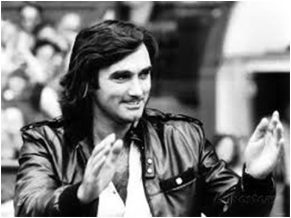
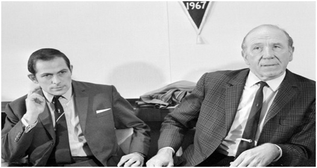

Chương 17

ỉnh cao là khởi đầu của vực sâu. Ngay trong năm vinh quang 1968, đã xuất hiện vết nứt rạn trên tượng đài kỳ vĩ. Chấn thương đầu gối buộc Denis Law đóng vai kẻ ngoài lề trong gần hết chuyến hành trình chinh phục Cúp C1. Từ đó trở đi, ngoại trừ lần bùng nổ cuối cùng mùa 1968-1969 với 30 bàn thắng, Law chỉ còn là chiếc bóng mờ.
Sau Law đến lượt Matt Busby. Trên bình diện CLB, Busby đã sưu tập đủ các danh hiệu. Cúp C1 1968 giúp ông giữ vẹn lời thề với những học trò quá cố. Lại cũng nhờ nó, ông được nữ hoàng Anh ban tặng tước Hiệp Sỹ cao quý[1]. Ở tuổi 60, công thành danh toại, ước thệ đã tròn, chẳng còn lý do gì khiến Busby luyến tiếc chiếc ghế HLV. Tháng 1, 1969, ông tuyên bố sẽ về hưu vào cuối mùa, chuyển lên tham gia BLĐ CLB, với chức vụ tổng giám đốc. Ai sẽ kế vị Busby? Giới thạo tin chuyền tai nhau những cái tên lừng lẫy như Don Revie của Leeds và Jock Stein của Celtic. Nhưng đến tháng tư, Busby khiến tất cả bật ngửa, khi tiết lộ sẽ truyền “y bát” cho Wilf McGuinness.
Bật ngửa là phải, bởi lâu nay McGuinness chỉ giữ vai trợ huấn cho Busby, lãnh trách nhiệm dẫn dắt đội trẻ, chứ chưa từng có kinh nghiệm làm HLV trưởng tại bất kỳ CLB nào. Song Busby có cái lý riêng. Ông cho rằng McGuinness làm việc cùng mình đã nhiều năm, hiểu rõ triết lý của mình, lại thân thuộc với cầu thủ; nếu McGuinness lên nắm quyền, quá trình chuyển tiếp sẽ diễn ra êm đềm, không gây xáo trộn.Đương nhiên, xét theo tiêu chí trên, Jimmy Murphy hẳn phải sáng giá hơn rất nhiều so với McGuinnness. Có điều, Murphy chỉ kém Busby một tuổi, không thể là lựa chọn cho tương lai. Sau khi Busby giải nghệ ít lâu, Murphy cũng “treo ấn từ quan”.
Trong khi Busby rời ghế HLV trong vinh quang, trở thành “thái thượng hoàng” đầy quyền lực, thì Murphy ra đi không kèn không trống. United không những không tổ chức hoạt động gì tôn vinh Murphy, mà còn cắt luôn số tiền phụ cấp di chuyển của ông, bất chấp việc sau khi nghỉ hưu, ông vẫn thường xuyên đến làm việc bán thời gian cho đội trong vai trò một tuyển trạch viên[2]. Mãi đến năm 1990, BLĐ mới nhớ đến ông, đặt tên cho giải thưởng giành tặng cầu thủ trẻ xuất sắc nhất mỗi năm của CLB là giải Jimmy Murphy. Hành động này quá muộn màng, vì Murphy đã qua đời một năm trước đó.
Khi nhận trọng trách ở Old Trafford, Wilf McGuinness mới 31 tuổi. Biết người kế vị hãy còn non tay, Busby chưa trao hết quyền về anh. Mang tiếng HLV, nhưng McGuinness chỉ có quyền chỉ đạo trên sân, còn những vấn đề khác như chuyển nhượng, lương bổng, giao thiệp với truyền thông và BLĐ, vẫn do Busby đảm nhiệm. Phân công như vậy, Busby vốn có ý tốt, muốn giúp đỡ McGuinness trong thời gian đầu bỡ ngỡ, không ngờ rằng làm thế vô hình trung khiến McGuinness mất uy tín trầm trọng. Thấy rõ Busby tuy về hưu mà vẫn ngồi ở văn phòng cũ, hưởng lương 200 bảng mỗi tuần; còn McGuinness phải làm việc trong phòng nhỏ hơn, lương có 80 bảng, các cầu thủ đều hiểu quyền lực thật sự nằm trong tay ai. Thế nên, khi xảy ra chuyện gì, họ đều tìm thẳng đến Busby, chẳng ai để ý đến vị tân HLV trẻ tuổi.
Không được trao trọn quyền, McGuinness lại phải thừa kế từ Busby một đội hình bắt đầu rệu rã. Bước vào năm 1969, Bill Foulkes đã 37 tuổi, Denis Law mới 29 song luôn bị chấn thương hành hạ. Bobby Charlton 32, bắt đầu bước sang bên kia sườn dốc sự nghiệp. Mùa vinh quang 1967-1968 cũng là mùa cuối cùng Charlton ghi được 20 bàn thắng. Những năm sau, tuy chơi vẫn tròn vai, anh không thể tỏa sáng rực rỡ như xưa. Trong khi đó, dù Brian Kidd, Francis Burns, Jimmy Ryan…đều tuổi trẻ tài cao, họ chưa đạt đến đẳng cấp siêu sao. McGuinness muốn đưa về hàng loạt nhân sự mới, nào là Malcolm Macdonald, Colin Todd, Mick Mills…, nhưng Busby lại mua Ian Ure, một cầu thủ anh chẳng biết dùng để làm gì. Mọi hy vọng của McGuinness, do vậy, đều đặt cả vào George Best.
David Beckham ngày nay nổi tiếng thế nào, thì George Best những năm 1960-1970 cũng nổi tiếng thế đấy. Best không chỉ là siêu sao, mà là…siêu tân tinh. Những huyền thoại ngày xưa như Billy Meredith hay Stanley Matthews chỉ nổi tiếng trong phạm vi túc cầu, chứ Best thì dù thích bóng đá hay không, dù quan tâm thể thao hay không, không ai lại không biết. Các hãng thời trang mời Best làm người mẫu, các doanh nghiệp xếp hàng nhờ anh quảng cáo cho sản phẩm của họ. Best chẳng từ chối một ai, nên người ta thấy khuôn mặt anh xuất hiện hàng ngày trên báo chí và truyền hình, quảng bá đủ loại hàng hóa, thượng vàng hạ cám, từ quần áo, giày dép, nước hoa, cho đến…xúc xích và khoai tây chiên! Thu nhập ngoài luồng của Best nhiều đến nỗi anh không cần biết mình lãnh lương bao nhiêu tại United. Tiền lương so với thu nhập từ quảng cáo chỉ còn là số lẻ.

George Best, David Beckham của những năm 1960 (Ảnh: Allposters.co.uk)
Đá bóng giỏi, điển trai, lại gợi tình, Best làm tan nát trái tim biết bao người hâm mộ, đặc biệt là các cô nàng mới lớn. Fan cuồng đóng trại trước cửa nhà anh, chỉ đợi anh bước ra là bám theo. Xe Best đậu ở bãi đỗ xe Old Trafford ngày nào cũng bị ghi bậy những hàng chữ tỏ tình, đến nỗi anh phải bỏ xe, đi taxi đến sân. Mỗi tuần, Best nhận được hàng chục ngàn bức thư từ fan, phải thuê riêng ba thư ký để trả lời. Bản thân anh cũng cố gắng hồi âm và ký tặng ít nhất vài trăm bức. “Cứ một tuần, tôi phải giành riêng hai buổi chiều chỉ để viết thư và ký tặng”, Best kể, “Người ta đã mất công viết cho mình, ít nhất mình cũng ký cho họ một chữ chứ”.
Nếu chỉ có thế thì tuy mất thời gian mà còn lành mạnh. Đằng này, càng nổi tiếng, Best càng bị cuốn hút vào thế giới phù hoa, sa lầy trong tệ nạn, nhất là sau khi giành Quả Bóng Vàng. Anh cặp kè cùng người mẫu kia, hoa hậu nọ, la cà liên miên hết club lại bar. Tệ hơn nữa, Best nghiện cả bài bạc lẫn rượu chè. Chính vì nghiện rượu không bỏ được, cơ thể anh bị tổn thương trầm trọng, dẫn đến cái chết sớm năm 59 tuổi.
Đặt hy vọng vào George Best, McGuinness như đang chơi một canh bạc. Từ 1969-1970 đến 1971-1972, Best luôn ghi mỗi mùa hơn 20 bàn, dẫn đầu danh sách phá lưới tại CLB. Thế nhưng, ẩn sau con số ổn định đó là một phong độ rất phập phù. Những khi ăn chơi ít, Best thể hiện kỹ năng “đỉnh của đỉnh”, như khi ghi 6 bàn trong trận thắng Northampton 8-2 vào tháng 2, 1970, tái lập kỷ lục của Harold Halse năm 1911[3]; còn khi đang độ bê tha, anh chẳng đóng góp được gì.
Trước trận bán kết Cúp FA gặp Leeds vào tháng 3, 1970, toàn đội United tập trung tại khách sạn ở Worchester. Trong lúc đồng đội đang nghỉ ngơi, George Best đưa gái vào phòng hú hí. Hai người “hành sự” ồn ào đến nỗi McGuinness nghe thấy, tông cửa xông vào, bắt tại trận màn hành lạc. Éo le thay, bắt xong rồi, McGuinness không biết xử trí ra sao. Kỷ luật Best nhỡ thua Leeds thì sao? Mà không kỷ luật thì còn gì là khuôn phép? Rốt cuộc, McGuinness cho Best ra sân, như không chuyện gì xảy ra. Cầu thủ United đều bất bình vì HLV không trừng phạt thói vô kỷ luật của Best, còn chính Best chơi mờ nhạt như một bóng ma; Quỷ Đỏ hòa Leeds 0-0, rồi thua 0-1 trong trận tái đấu.
Không riêng chuyện George Best, nói chung, cầu thủ không phục vị HLV mới trên mọi phương diện. Vì ai nấy đã quá quen với phong cách làm việc của Matt Busby, những thay đổi McGuinness thực hiện đều bị coi là phiền hà, nhiễu sự. Chẳng hạn, khi McGuinness áp dụng phương pháp hiện đại, cho đem bảng đen vào phòng thay đồ để vẽ hình, phân tích chiến thuật một cách chi ly thì học trò ngáp dài: Sao phức tạp thế, Sir Matt có nói nhiều vậy đâu! McGuinness muốn bỏ 4-2-4, chuyển sang dùng 4-3-3, chiến thuật đang là thời thượng sau thắng lợi của tuyển Anh ở World Cup 1966, cũng bị phản đối: Chiến thuật cũ giúp mình giành cúp C1, đổi để làm gì?
Kể cũng khổ cho McGuinness. Mới ngoài 30, còn quen thói vui vẻ trẻ trung, có bận đang ngồi xe buýt cùng đội bóng, anh nổi hứng đánh bài với tiền đạo cánh Willie Morgan, lúc thua thì nổi sung, quẳng bài tứ tung. Cầu thủ liền dè bỉu: HLV không nên nết, đi gầy sòng với cầu thủ, thua rồi lại sửng cồ! Rút kinh nghiệm, McGuinness giữ khoảng cách, làm nghiêm với hoc trò, thậm chí ra oai bằng cách bắt Bobby Charlton hít đất. Dư luận liền nhao nhao: Thật là không biết điều, Charlton ngang vai với ổng, mà ổng dám làm vậy!
Mùa 1969-1970, United chỉ đứng hạng tám, nhưng Busby vẫn kiên nhẫn tin dùng McGuinness. Hơn ai hết, ông hiểu rằng đội hình nay không được như xưa, muốn thành công quả tình rất khó. Ngay trong mùa cuối Busby ngồi ghế HLV, Quỷ Đỏ cũng trắng tay: Đứng thứ 11 giải Hạng Nhất, mất Cúp Liên Lục Địa vào tay Estudiantes (Argentina), và bị AC Milan loại khỏi bán kết Cúp C1[4]. Vậy sao trách được McGuinness.
Tuy thế, sự kiên nhẫn chỉ có giới hạn. Sang tháng 12, 1970, United thua liên tiếp, rơi xuống thứ 18, đứng trước nguy cơ xuống hạng. George Best thì ngày càng lộng hành, không những một mình bê tha, mà còn rủ rê đồng đội cùng đổ đốn. Không thể đứng nhìn được nữa, Matt Busby quyết định trở lại ghế HLV. McGuinness bị đẩy về đội trẻ như cũ, đến cuối mùa thì xuất ngoại, sang Hy Lạp làm HLV cho Aris FC.
Quen mùi ăn chơi, trước trận gặp Chelsea vào tháng 1, 1971, George Best bỏ đội, đến ăn dầm nằm dề ở nhà cô bồ, diễn viên Sinead Cusack[5]. Không thiếu quyết đoán như McGuinness, Busby phạt tiền Best thật nặng, kèm treo giò hai tuần. Thấy thầy cũ tái xuất, ra tay trừng phạt, Best riu ríu quay về, tuân thủ nội quy được một thời gian. Với Best nổ súng đều đặn, phong độ United cải thiện trong nửa sau mùa giải, vươn lên được thứ tám. Đã nhấn mạnh từ đầu kỳ trở lại này chỉ mang tính chữa cháy, nên trận cuối mùa cũng là lần cuối cùng Sir Matt dẫn dắt Quỷ Đỏ. Trong trận cầu đầy kịch tính và cảm xúc ấy, United thắng kình địch City 4-3. Như để tiễn đưa người thầy yêu kính, M.U Tam Thánh cùng thể hiện phong độ tuyệt vời như thời hoàng kim: Best lập công hai lần, hai bàn còn lại chia đều cho Law và Charlton.

Sir Matt Busby và Wilf McGuinness (Ảnh: Mirror.co.uk)
Chú thích:
[1] Busby được phong Hiệp Sỹ năm 1969. Năm 1972, ông còn được tòa thánh Vatican vinh phong là Trưởng Hiệp Sỹ Dòng Thánh Grêgôriô Cả (Knight Commander of the Order of St.Gregory the Great).
[2] Jimmy Murphy không biết lái xe hơi, nên được CLB cho hưởng phụ cấp di chuyển bằng taxi. Sau khi bị cắt phụ cấp, ông phải bắt xe buýt đi làm.
[3] Về Harold Halse, xin xem lại chương bốn.
[4] United thua Milan 0-2 lượt đi, thắng 1-0 lượt về. Trong trận lượt về, Denis Law bị từ chối một bàn thắng, vì trọng tài cho rằng bóng chưa qua khỏi vạch vôi. Với kỹ thuật thời đó, không thể xác định được trọng tài đúng hay sai, bàn thắng hợp lệ hay chưa. Nếu bàn thắng được công nhận, hai bên đã phải tái đấu.
[5] Trong Manchester United – The Biography, White (2010) viết rằng sự việc xảy ra lúc McGuinness còn tại vị. Ấy là nhầm.